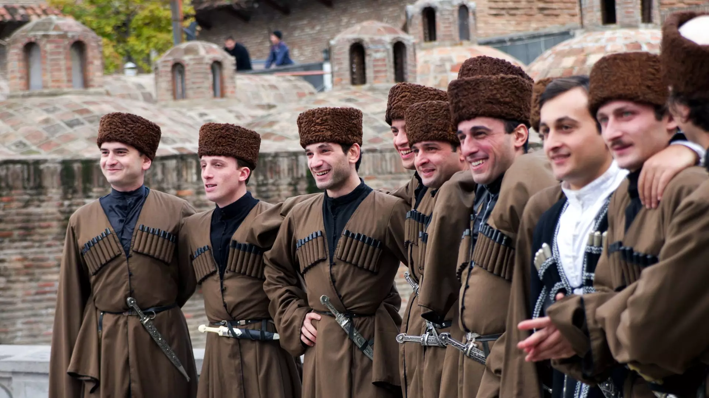
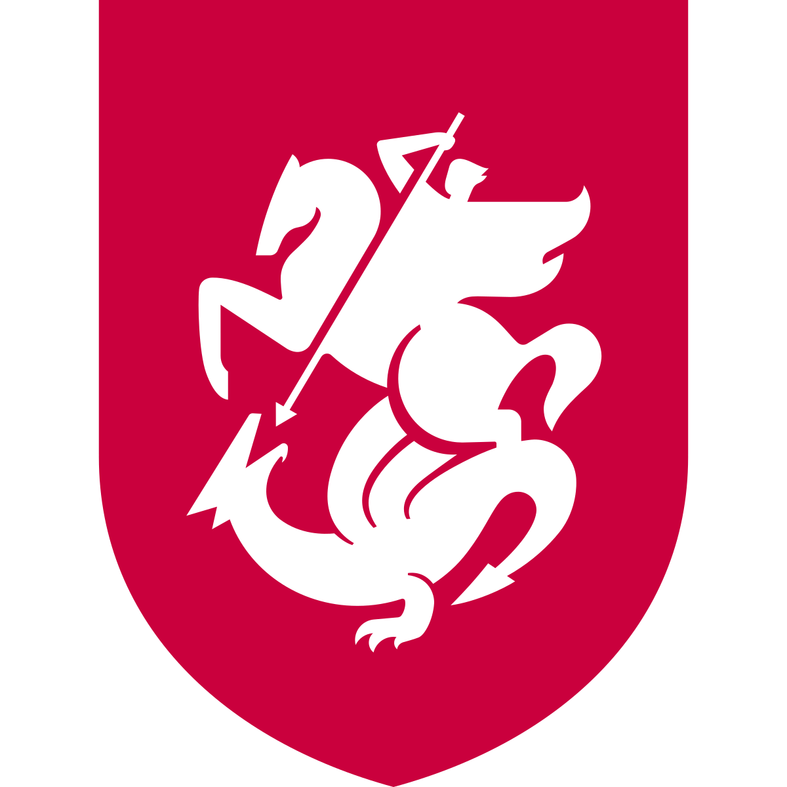
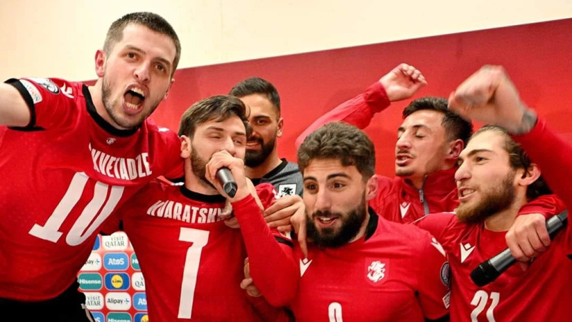
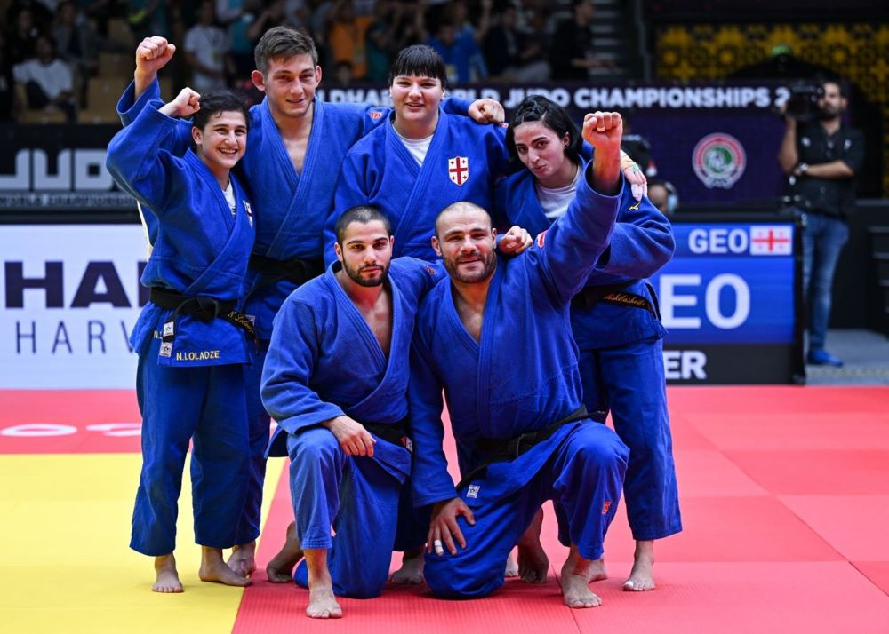
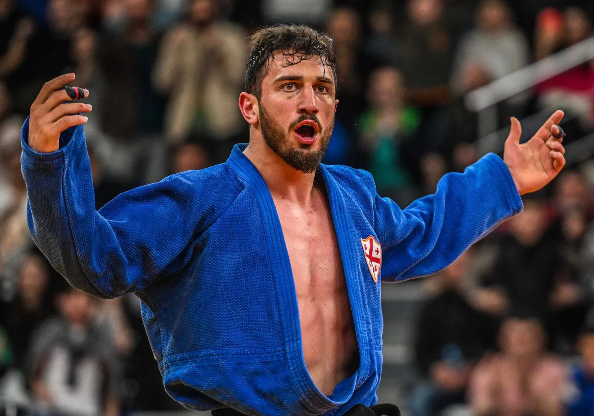
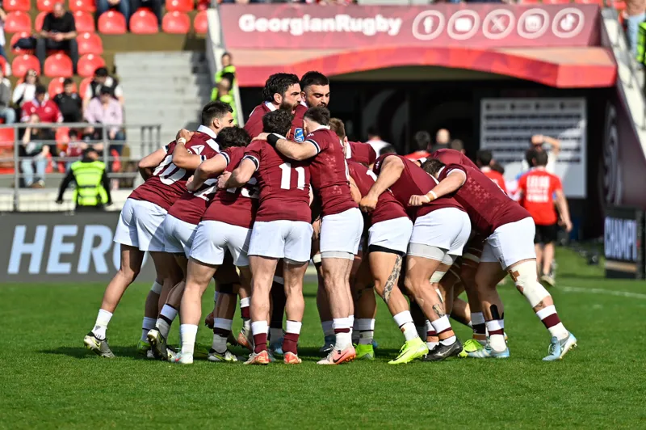

Georgia, country of Transcaucasia located at the eastern end of the Black Sea on the southern flanks of the main crest of the Greater Caucasus Mountains. It is bounded on the north and northeast by Russia, on the east and southeast by Azerbaijan, on the south by Armenia and Turkey, and on the west by the Black Sea. Georgia includes three ethnic enclaves: Abkhazia, in the northwest (principal city Sokhumi); Ajaria, in the southwest (principal city Batʿumi); and South Ossetia, in the north (principal city Tskhinvali). The capital of Georgia is Tbilisi (Tiflis).The roots of the Georgian people extend deep in history; their cultural heritage is equally ancient and rich. During the medieval period a powerful Georgian kingdom existed, reaching its height between the 10th and 13th centuries. After a long period of Turkish and Persian domination, Georgia was annexed by the Russian Empire in the 19th century. An independent Georgian state existed from 1918 to 1921, when it was incorporated into the Soviet Union. In 1936 Georgia became a constituent (union) republic and continued as such until the collapse of the Soviet Union. During the Soviet period the Georgian economy was modernized and diversified. One of the most independence-minded republics, Georgia declared sovereignty on November 19, 1989, and independence on April 9, 1991.
With the notable exception of the fertile plain of the Kolkhida Lowland—ancient
Colchis, where the legendary Argonauts sought the Golden Fleece—the Georgian terrain is largely mountainous,
and more than a third is covered by forest or brushwood.
There is a remarkable variety of landscape,
ranging from the subtropical Black Sea shores to the ice and snow of the crest line of the Caucasus.
Such contrasts are made more noteworthy by the country’s relatively small area.
To the north lies the wall of the Greater Caucasus range,
consisting of a series of parallel and transverse mountain belts rising eastward and often separated by deep, wild gorges.
Spectacular crest-line peaks include those of Mount Shkhara, which at 16,627 feet (5,068 metres) is the highest point in Georgia,
and Mounts Rustaveli, Tetnuld, and Ushba, all of which are above 15,000 feet.
he cone of the extinct Mkinvari (Kazbek) volcano dominates the northernmost Bokovoy range from a height of 16,512 feet.
A number of important spurs extend in a southward direction from the central range, including those of the Lomis and Kartli (Kartalinian) ranges at right angles to the general Caucasian trend. From the ice-clad flanks of these desolately beautiful high regions flow many streams and rivers.
The Georgian language is a member of the Kartvelian (South Caucasian) family of languages. It has its own alphabet, which is thought to have evolved about the 5th century, and there are many dialects. A number of other Caucasian languages are spoken by minority groups; many are unwritten.
Many Georgians are members of the Georgian Orthodox Church, an autocephalous Eastern Orthodox church. In addition, there are Muslim, Russian Orthodox, Armenian Apostolic, Catholic, and Jewish communities.
Population density in Georgia decreases with increasing altitude. The population of Georgia is concentrated in the narrow valley between the Greater Caucasus mountains in the north and the Lesser Caucasus in the south and along the coast of the Black Sea to the west. Population densities are relatively high but are less than those for Armenia and Azerbaijan.Tbilisi, the capital, ancient city with many architectural monuments mingling with modern buildings, lies in eastern Georgia, partly in a scenic gorge of the Kura River. Other major centers are Kʿutʿaisi, Rustʿavi, Sokhumi, and Batʿumi. During the Soviet period the Georgian population increased, with a marked trend toward urbanization. More than half the population now lives in cities. Further, a considerable portion of the population that is defined as rural is in fact engaged in the urban economy of nearby cities. There also was a significant shift in the distribution of the population to urban centers in recent years, as the rural population has decreased by about one-fourth since the beginning of the 21st century. Enterprises for primary processing of agricultural products have been constructed in the villages, while ore-processing plants and light industry also are increasing in number. As a result, many of the slow-paced traditional villages have developed into distinctly modern communities. The number of rural inhabitants remains as high as it is because of the wide distribution of labour-intensive branches of the economy such as the tea and subtropical crop plantations.
Traditionally, the people from the area of today´s Georgia always appreciated physical activities and sports, which remained as an essential element of life for this people up to this day. The most popular sports in Georgia today are football, rugby union, basketball, wrestling as well as weightlifting. However, polo is also one of the well-liked as well as traditional Georgian sports such as lelo and khridoli. Lelo which is also called lelo burti is a Georgian folk sport, similar to rugby and the main reason why rugby union is among the most played sports. The name lelo burti in literal translation means field ball. Khridoli, on the other hand, is a traditional martial art, which along with lelo burti was listed as a nonmaterial monument of culture by the government of Georgia
Football is, definitely, the most popular sport in Georgia, and Europe in general. All competitions, and men´s and women´s football teams, as well as national futsal teams, are organized and governed by the Georgian Football Federation or GFF. The Georgian national team had their first match in 1990, while this country was still part of the Soviet Union. In 1992, both UEFA and FIFA accepted Georgian Football Federation as their member, offering them the chance to play competitive matches. The first match after UEFA and FIFA acceptance was in September 1994, when Georgia lost the match to Moldova 1–0.
Rugby union in Georgia is considered second most popular team sport. Georgia hosted national competitions such as Rugby World Cup, Rugby World Cup Sevens, IRB Sevens World Series, and European Nations Cup. This sport is particularly popular because of its resemblance to lelo burti. Therefore, Georgian national rugby union team has the nickname Lelos. Even though Georgia is the country small in size, it has produced some of the greatest basketball players such as Tornike Shengelia, Vladimir Stepania, Nikoloz Tskitishvili and finally, Zaza Pachulia. Through the past several years, the people of Georgia supported their national team, traveling even to Lithuania to cheer for their team at the 2011 EuroBasket. The Georgian federation or GBF was founded in June 1991. Since 1992 they are a member of FIBA. The Georgian national basketball team had their first official game against Poland in 1995.
Georgian Judo Federation is one of the most successful sports organizations in the country, producing a significant number of athletes every year. For example, in the last Summer Olympics in Rio de Janeiro, Georgia had a total of eight judokas in different weight classes. Among them were London 2012 champion Lasha Shavdatuashvili as well as world number 1 Avtandili Tchrikishvili. It is also important to mention that, Esther Stam became the nation´s first female judoka. She competed in women's middleweight competition (70 kg). Besides, the judo team was named to the Olympic roster in June 2016. 2016 was also notable because that was the year when Georgian National Olympic Committee sent the nation's largest Olympic delegation until then. A total of 40 athletes, 30 men, and 10 women were competing in twelve categories. In addition, Georgia made its Olympic debut in flatwater canoeing, men's tennis, women's judo, and women's weightlifting. Georgian team came back from 2016 Summer Olympics with seven medals, just like from 2012 Summer Olympics in London. However, this time they brought two gold medals, one silver, and four bronze.
    